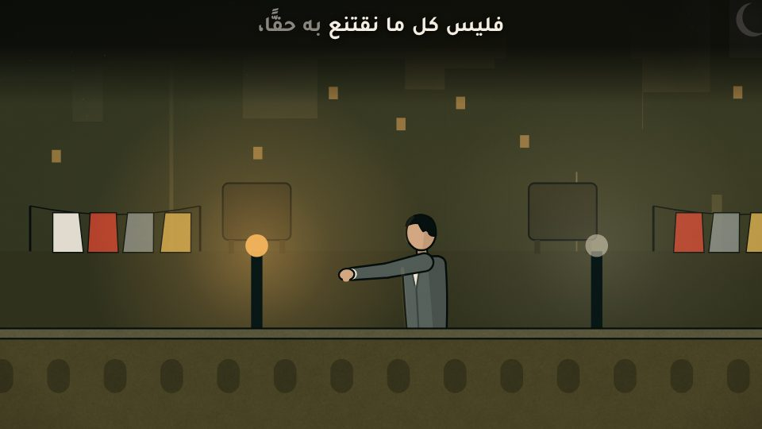
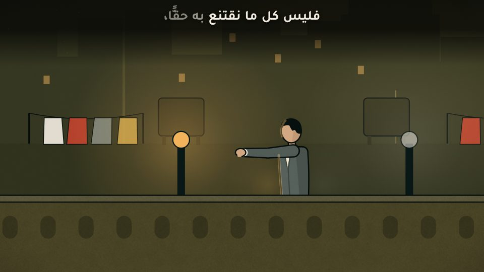
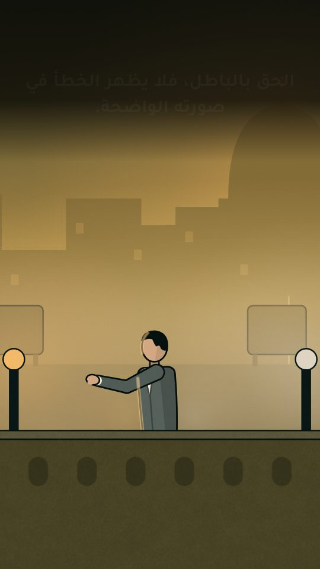

السطح فجرًا: يختلط الحق بالباطل c1-s12
ما كان غير واضح
الاختلاط كان امتزاجًا لونيًا في ضباب كثيف، والبطل صغير لا يُقرأ عليه أثر للالتباس.ما تغيّر في التصميم
المصباحان قائمان طوال المشهد. قبل «يختلط» إيماءتان حاسمتان: يشير إلى الأول كاملًا، ويعرض عن الثاني كاملًا. بعده يتطابق لون الضوءين ويقع كل منهما على جانب منه بالتساوي، فيمد كفًا نصف مرفوعة نحو الأول، ثم يلتفت إلى الثاني بالكف نفسها، ثم يعود، ولا يتم الإشارة؛ ثم يضع يده على ذقنه. الكاميرا تقترب منه عند الالتباس.اختبار الهاتف (390 بكسل)
المصباحان والبطل في الإطار؛ التفاته بين المصباحين يُقرأ، والكف نصف المرفوعة أوضح في الأفقي منها في العمودي.قبل (v3)


إطار 40


إطار 120


إطار 340
بعد (v4)


إطار 50


إطار 120


إطار 245


إطار 330